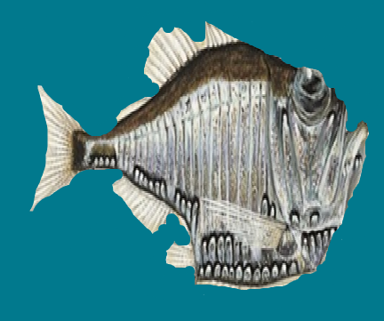

СЕМЕЙСТВА Gasteropelecidae
ГЛУБИНА:до 1500 метров.
КОГДА ОТКРЫЛИ: в 1758 году в Южной Америке.
ТИП ПИТАНИЯ:плотоядный
ПОВЕДЕНИЕ:Способность выпрыгивать из воды — это помогает ловить насекомых и спасаться от хищников. Во время прыжка грудные плавники расправляются как крылья, помогая маневрированию. при опасности рыбы мгновенно прячутся в растительности.
Чем больше стайка, тем активнее рыбы и тем дольше их продолжительность жизни. Требовательна к чистоте воды — плохо переносит колебания параметров pH и dH.
Среда обитания В природе рыба-топорик обитает в реках и ручьях Южной Америки, особенно в бассейне реки Амазонка. Предпочитает спокойные воды с медленным течением, с густой растительностью и большим количеством укромных мест. Часто встречается у поверхности воды, где охотится на насекомых.
Размножение В природе нерест сезонный (с началом дождей), групповой.
В аквариумах разведение затруднено. Для нереста необходим отдельный нерестовик с мягкой и кислой водой (pH 5.5–6.5, dH до 5°) и температурой около 26–28 °C. Самка откладывает икру на листья растений или плавающие коряги. После нереста родителей нужно отсадить, так как они могут съесть икру.

наверх